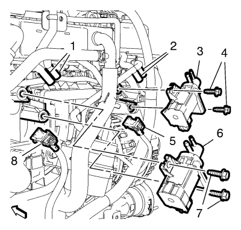

Cruze
Sustitución de la válvula solenoide de control de vacío de la válvula de ajuste del aire de admisión
Procedimiento de desmontaje
Desmontar la pantalla de protección del motor. Consultar
Sustitución del protector del motor
.

Desemborne los 2 enchufes del mazo de cables de la válvula solenoide de control de vacío de la válvula de ajuste (5, 8).
Retire los 4 tubos flexibles de la válvula solenoide de control de vacío de la válvula de ajuste (1, 2).
Retire los 2 tornillos de la válvula solenoide de control de vacío de la válvula de ajuste (4).
Retire la válvula solenoide de control de vacío de la válvula de ajuste del aire de admisión (3).
Retire los 2 tornillos adicionales de la válvula solenoide de control de vacío de la válvula de ajuste (7).
Retire la válvula solenoide de control de vacío de la válvula de ajuste del aire de admisión adicional (6).
Procedimiento de montaje
Monte la válvula solenoide de control de vacío de la válvula de ajuste del aire de admisión adicional (6).
Precaución:
Consulte
Precaución con las fijaciones
en la sección Prólogo.
Monte los 2 tornillos adicionales de la válvula solenoide de control de vacío de la válvula de ajuste (7) y apriételos a
10 N·m (89 lib. pulg.)
.
Monte la válvula solenoide de control de vacío de la válvula de ajuste del aire de admisión (3).
Monte los 2 tornillos de la válvula solenoide de control de vacío de la válvula de ajuste (4) y apriételos a
10 N·m (89 lib. pulg.)
.
Monte los 4 tubos flexibles de la válvula solenoide de control de vacío de la válvula de ajuste (1, 2).
Emborne los 2 enchufes del mazo de cables de la válvula solenoide de control de vacío de la válvula de ajuste (5, 8).
Monte el protector del motor. Consultar
Sustitución del protector del motor
.
© Copyright Chevrolet. All rights reserved